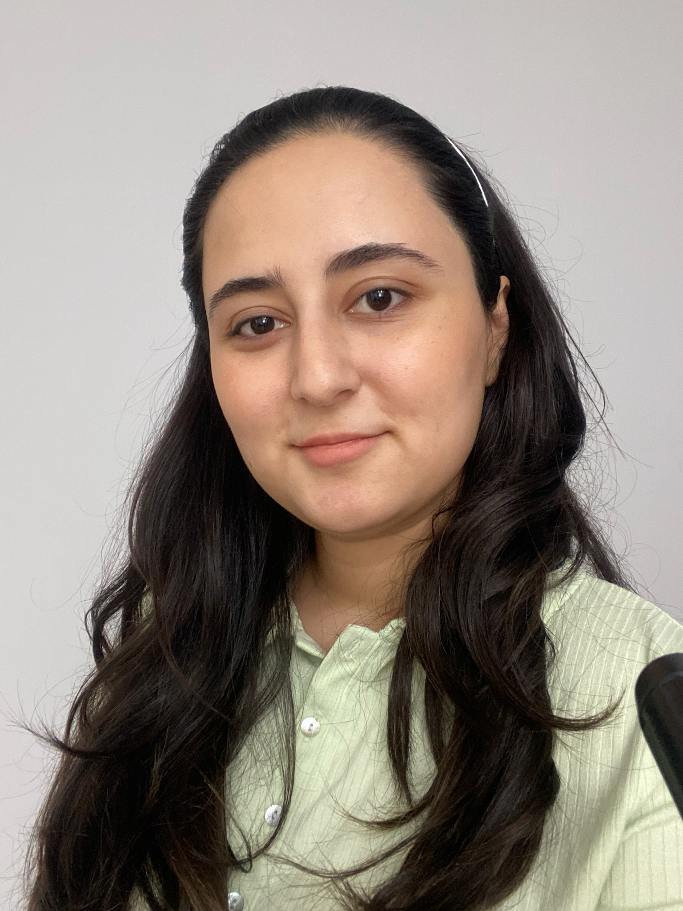

Aytan Huseynli

Summary
Digital Marketing Specialist with over 3 years experiences on Media Buying and Planning, Social Media Management, Influencer Marketing, Marketing Analysis.
Education
- Scandinavian Studies - AUL | 2017-2019
- Gender Equality in Nordic countries - University of Oslo | 2018 Jun-Aug
- International Relations - BSU | 2013-2017
Work Experience
Marketing Coordination - Rossmann Azerbaijan | Aug'22 - present
- Managing Social Media and Community of the brand
- Managing influencer campaigns
- Planning store openning events
Digital Marketing Specialist - Mccann | Oct'21-Jan'22
- Planning and buying search, social and display ads
- Optimizing campaign KPIs for better performance
Media Planner - Starcom | Jul'20-Oct'21
- Assisting and developing media strategies, channel recommendations, and a detailed media plan
- Monthly Reports: Competitor analysis, media spending, campaign results, etc
Skills
- Social Media Management⭐️⭐️⭐️⭐️⭐️
- Influencer Marketing⭐️⭐️⭐️⭐️⭐️
- Google Ads⭐️⭐️⭐️⭐️
- Meta Ads⭐️⭐️⭐️⭐️⭐️
Certificates
- Google Data Analytics - Coursera
- Digital Marketing Foundation - Linkedin Learning